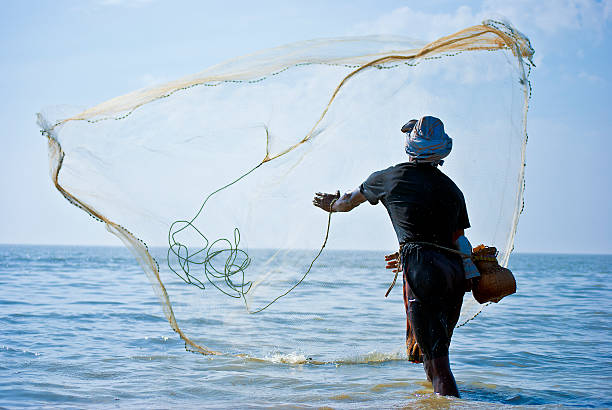

Fishing Methods
For example, artisanal fishermen often use handlines, traps, and small nets to target specific species, reducing bycatch. On the other hand, commercial fishing operations may rely on trawlers and longlines to catch fish in large quantities. Striking a balance between efficiency and sustainability is key in modern fishing practices.
Learn more about sustainable fishing at Sustainable Fisheries.
There are numerous fishing methods that fishermen have perfected over the years, ranging from traditional hand fishing to modern industrial techniques. Each method is suited to different environments and species, ensuring that fishermen maximize their catch while minimizing harm to the environment.
Often use handlines, traps, and small nets to target specific species, reducing bycatch. On the other hand, commercial fishing operations may rely on trawlers and longlines to catch fish in large quantities. Striking a balance between efficiency and sustainability is key in modern fishing practices.
There are numerous fishing methods that fishermen have perfected over the years, ranging from traditional hand fishing to modern industrial techniques. Each method is suited to different environments and species, ensuring that fishermen maximize their catch while minimizing harm to the environment.
Example, artisanal fishermen often use handlines, traps, and small nets to target specific species, reducing bycatch. On the other hand, commercial fishing operations may rely on trawlers and longlines to catch fish in large quantities. Striking a balance between efficiency and sustainability is key in modern fishing practices.
There are numerous fishing methods that fishermen have perfected over the years, ranging from traditional hand fishing to modern industrial techniques. Each method is suited to different environments and species, ensuring that fishermen maximize their catch while minimizing harm to the environment.
Fishermen often use handlines, traps, and small nets to target specific species, reducing bycatch. On the other hand, commercial fishing operations may rely on trawlers and longlines to catch fish in large quantities. Striking a balance between efficiency and sustainability is key in modern fishing practices.
There are numerous fishing methods that fishermen have perfected over the years, ranging from traditional hand fishing to modern industrial techniques. Each method is suited to different environments and species, ensuring that fishermen maximize their catch while minimizing harm to the environment.
Artisanal fishermen often use handlines, traps, and small nets to target specific species, reducing bycatch. On the other hand, commercial fishing operations may rely on trawlers and longlines to catch fish in large quantities. Striking a balance between efficiency and sustainability is key in modern fishing practices.
There are numerous fishing methods that fishermen have perfected over the years, ranging from traditional hand fishing to modern industrial techniques. Each method is suited to different environments and species, ensuring that fishermen maximize their catch while minimizing harm to the environment.
Using handlines, traps, and small nets to target specific species, reducing bycatch. On the other hand, commercial fishing operations may rely on trawlers and longlines to catch fish in large quantities. Striking a balance between efficiency and sustainability is key in modern fishing practices.
For example, artisanal fishermen often use handlines, traps, and small nets to target specific species, reducing bycatch. On the other hand, commercial fishing operations may rely on trawlers and longlines to catch fish in large quantities. Striking a balance between efficiency and sustainability is key in modern fishing practices.
Traditional Fishing Techniques
Traditional fishing techniques in Bangladesh are both effective and fascinating. Fishermen use jala (net fishing), which involves casting large nets to capture fish in shallow waters. Line fishing, using baited hooks, is also common, as it allows fishermen to target specific fish species. Cast nets or throw nets are popular for smaller catches, while larger fishing expeditions may use gillnets. Each of these methods has been practiced for generations, adapting over time to local fish populations and ecological conditions.
Modern Methods and Technology
With the increase in demand, modern fishing technologies like trawlers and sonar have been introduced to Bangladeshi waters. Trawlers allow for large-scale, deep-sea fishing, while sonar technology helps fishermen locate schools of fish more accurately. However, these methods have raised concerns regarding overfishing and the environmental impact of deep-sea trawling. Some traditional fishermen worry that these new technologies may affect fish populations and hurt the livelihoods of smaller fishing communities. Balancing these modern methods with sustainability is a key challenge that the industry faces today.